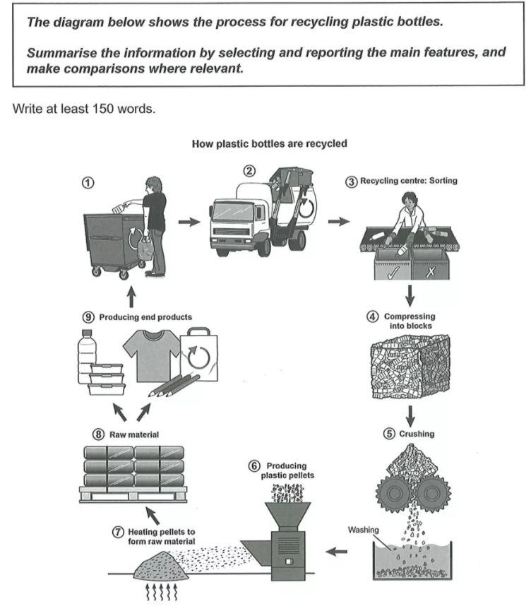
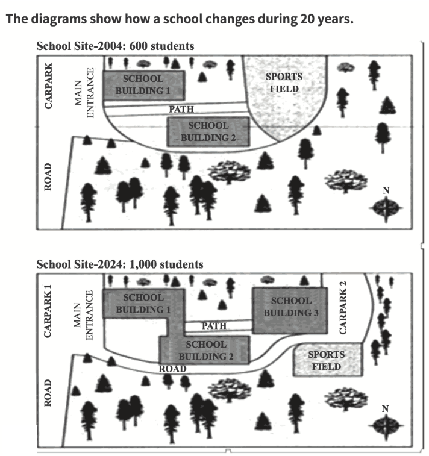
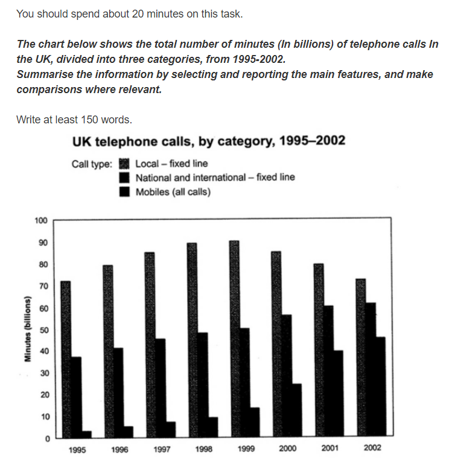
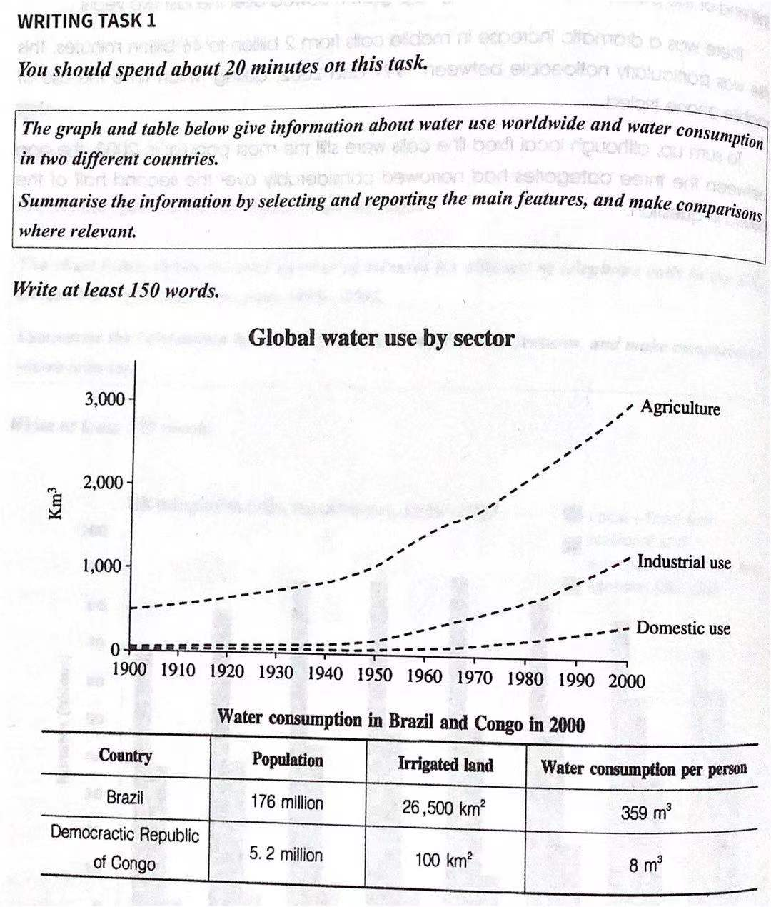

雅思考试小作文
摘要
学习笔记
1.介绍
雅思考试的写作模块要求在1个小时内完成2篇作文(Task1和Task2)，分别要求150字以上和250字以上。时间分配大概是20分钟和40分钟。
其中小作文即task1，可以归为3个类型，流程图题、地图题和图表题。接下来按顺序依次总结。
2.流程图题
2.1 注意点
题目一般为描述一个流程图，下图为剑16第四篇的小作文。和小学作文的看图写作差不多，稍微注意几点。 1. 流程图中很有可能会出现看不懂的词，这个问题不大，因为有些涉及行业的专有名词，只要能判断词性然后用常识适当推理就行。 2. 图中出现的英文单词务必要用上，而且不要同义替换，描述完图是采分点，不用替换是可能会改变原义。 3. 句型都用被动句，因为在图中是看不出动作的执行者的，所以尽量用被动句。 4. 注意时态通常为一般现在时，因为描述的是步骤，不太会改变。

2.2 段落分配
这个比较自由，除开开头段和结尾段，中间的段落可以随意，一般为2到4段。
开头段是对题目的改写，如将diagram改为picture，shows改成illustrates，process改成how引导的从句。然后加上一句"there are X stages of the process."其中X为流程图的步骤，图中如果未标明有多少步，则可以写个大概数，或者直接写several stages.
结尾段写一句总结句，总结者开头结尾的步骤。结尾："To sum up, this process begins with --- and culminates in ----"
中间可以加入些无关紧要的话凑下字，还可以使用一下“for further treatment”等万能句式。
2.3 连接词
| 中文 | 英文 |
|---|---|
| 首先 | first, to begin, first of all |
| 最后 | finally， in the last stage |
| 下一步 | then, next, in the next stage, after that, following this, later, before doning, subsequently, afterwards |
| 表示时间 | during, it takes some time to do sth |
| 表同时 | at the same time, in the meanwhile |
| 表目的 | in order to, in order that, so that |
| 表结果 | as a result, consequently |
2.4 示范
回应上图任务。
NB:这是自己写的，仅供参考。
The picture illustrates how plastic bottles are collected, sorted and reproduced. There are 9 stages of the process.
To begin, plastic bottles are dropped in the big recycle bins, which are often seen in the garbage center of the community. Then they are transported to the recycling centre by truck for further treatment.
In the next stage, they are sorted into two parts(recyclable, unrecyclable, respectively) to be sent to different places. And following this, recyclable plastic bottles are compressed into blocks to facilitate subsequent processing.
Next, they are crushed to chips and washed in solution before producing plastic pellets by machine. Later, pellets are heated to form raw material, and those materials can be offered to factories. Finally, they are produced into end products, such as bottles, pencils, T-shirts and bags and then sold to users.
To sum up, this process begins with collecting plastic bottles and culminates in producing products.
字数可能锵锵够，可以再多写点。
3.地图题
3.1 注意点
题目一般2-4个图，需要描述图中建筑的变化，可能是随着年份变化，也可能是计划规划，样式见下图。需要注意如下几点。 1. 注意图中的年份，可能在写作中需要变化时态。 2. 方向描述见指南针，如没有优先找主路，按close to等方位词。 3. 句型使用there be/被动句/定从。 4. 注意比例尺和脚注，如果有的话。

3.2 段落分配
选定描述顺序，一般为从北向南，也有可能自西向东，中间向四周。
开头段改写题目
第二段按顺序描写第一幅图片中的各个位置
第n段(n≥3)对比描写第n与第n-1段的变化
结尾段总结各个建筑的面积变化。
3.3 词汇补充
描述初始建造：bebuilt/established/constructed/sited/located
描述改变建造：create(凭空),convert sth into(转变)
计划：beplanned/projected/expected
变大：extend/expand/widen/enlarge/increase in size
变小：demolish/shorten/reduce in size
不变：remain unchanged
变了位置：relocate
3.4 示范
回应上图任务
NB:部分借鉴范文
The two pictures illustrate the changes of a school from 2004 to 2024.
There were 600 students in school in 2004. According to the first diagram, in the west, there is a road which leads to a carpark. And the main entrance is opposite the carpark, facing the west side. there is a path inside the school, that connects the entrance and the sports field. two school buildings are located on the north and south sides of the path respectively. other places in school are green areas.
by 2024, the school will have been reconstructed in order to accommodate more students(about 1,000). For the convenience of teachers and students, two school buildings will be linked together. And A new school building is planned to be created. it will replace the original sports field. At its east, a new carpark is planned, which will be connected with the first one, via a newly-built road. In addition, the sports field will be reduced in size and relocated to the south of its previous location.
During the two decades, several developments take place, with the addition of new buildings as well as the inclusion of a new road and car park.
4.图表题
4.1 图表题简介
图表题是在小作文中最为常见的题型，比上两者要重要的多，比较考验写作者的逻辑思维判断能力。
图表题又可以分为静态图表和动态图表，区分依据为是否存在时间变化。整体来说静态图比动态图简单，动态图确定时刻即转变为静态图。所以当题目出现双图表时，最好写动静混合，这样句型不会过多重复。
图表题准备工作： 1. 看：看题目、看标题、看标注、看单位 2. 时：确定时态，一般为三个（一般现在时，一般过去式，一般将来时） 3. 点：选择数据点推荐10+-2 4. 段：分配段落
4.2 图表信息处理
4.2.1 静态图表
静态图处理比较简单，背住能熟练使用五大句型处理即可 1. 主动句：The percentage of money on rent accounts for about 60%. 2. 被动句：60% of money is spent on rent. 3. there be：There is 60% of money spent on rent. 4. 60% of money is due to rent. 5. 比较句：A is (nearly/over) twice as many/much as B.
4.2.2 动态图表
相比之下动态图标不仅要点明数据，同时还要体现出它的变化趋势。
选择数据点（按下列顺序选取，选10个为止）： 1. 起点、终点 2. 最值点 3. 交叉点 多余数据可以不写，或者统一用范围法/平均值法描写
趋势有 1. 上升：grow, rise, increase 2. 下降：fall, decline, decrease 3. 稳定：stablilize, keep stable 4. 波动：fluctuate
副词 1. 大幅度：rapid/ly,sharp/ly,significant/ly,dramatic/ally 2. 小幅度：gradual/ly,steady/ily,slight/ly,slow/ly
动态图的句型 1. 副词+动词：The local-fixed line increased significantly to about 88 billion minutes in 1999. 2. 形容词+名词：The local-fixed line showed a trend of gradual decrease from 88 billion in 1999 to 72 billion in 2002. 3. 被动句：A steady increase to about 21 billion minutes was found in National and international-fixed line from 1995 to 2002. 4. 横坐标：The period between 1999 and 2002 saw a sharp increase in mobile calls from 12 billion to 46 billion minutes. 5. There be:There is a dramatic increase in mobile calls from 12 billion to 46 billion minutes between 1999 and 2002.
4.3 段落处理
开头段，方法同上，改写题目
中间几段按逻辑分段，能自圆其说即可。如下题1，是一个动态图，可以按三个类别分为三段。
若有5条线，可以按走势（上升或下降）分为两段。若是两个图，可以一个图一段。按逻辑分段，条理更清楚，同时方便段间加逻辑连接词。
结尾段总结，静态图总结最多最少的部分，动态图总结最后变多还是变少了，也可以按静态图分析一下最后的点，也可以分析未来趋势。
4.4 示范
题1
C9T2

NB：部分借鉴范文
The figure illustrates how much time UK residents spent on three different ways of telephone calls between 1995 and 2002.
The local-fixed line was the biggest part of all types during the whole period. It increased significantly from 70 billion minutes in 1995 to about 88 billion minutes in 1999. After the following year, these calls showed a trend of gradual decrease to about 72 billion in 2002.
A steady increase to about 24 billion minutes was found in National and international-fixed line from 1995 to 2002(38 billion and 62 billion respectively).
Similarly, The period between 1995 and 1999 saw a slight increase in mobile calls from 2 billion to 12 billion minutes. And there is a dramatic increase in mobile calls from 12 billion to 46 billion minutes between 1999 and 2002, during which time the use of mobile phones more than tripled.
To sum up, local-fixed line calls were still most popular in 2002, but the gap between the three categories had narrowed.
题2

NB：部分借鉴范文
The figure shows how the amount of water used worldwide changed from 1900 to 2000.
In the global area, water used by agriculture was the largest quantity throughout the century, rasing from 500 \(Km^3\) in 1900 to around 3,000 \(Km^3\) in 2,000. water used in industrial and domestic sectors also increased, a slight grow to just below 200 \(Km^3\) was found in both two sectors from 1900 to 1950. From 1950 onwards, industrial use rose steadily to approximately over 1,000 \(Km^3\), while domestic use increased more slowly to only 300 \(Km^3\).
The table illustrates the consumption of water in two countries in 2000. the irrigated land in Brazil is bigger than that in Congo (26,500 \(km^2\) and 100 \(km^2\) respectively). And this is reflected in figures for water consumption per person, 359 \(m^3\) per person in Brazil, and only 8 \(m^2\) in Congo. With a population of 176 million, the figures for Brazil indicate how high agricultural water consumption can be in some countries.
5.结束语
本来这篇文章应该在十天前就发了，那时候只有两篇范文没写了，但收到雅思考试被取消的消息，我就不急着复习了，把这个放了一放，导致现在才弄完。
文章内容大部分出自考虫雅思王瑗老师的课程，本文仅作为学习笔记，并不能系统学习雅思写作。相比而言大作文会更难一些，我也没太大把握整理出方法，有空的时候会试着写写。